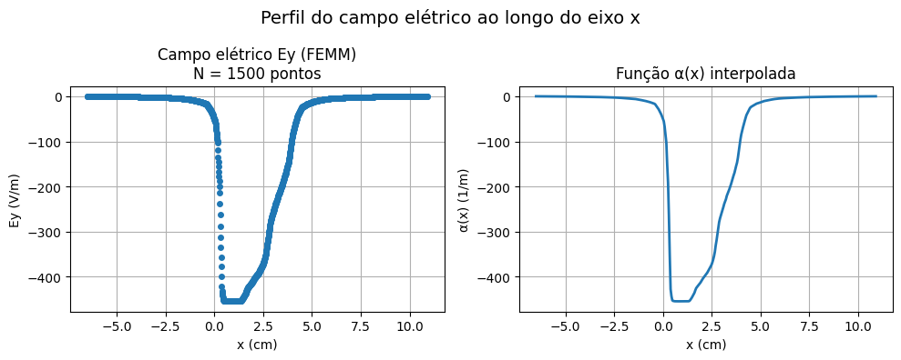
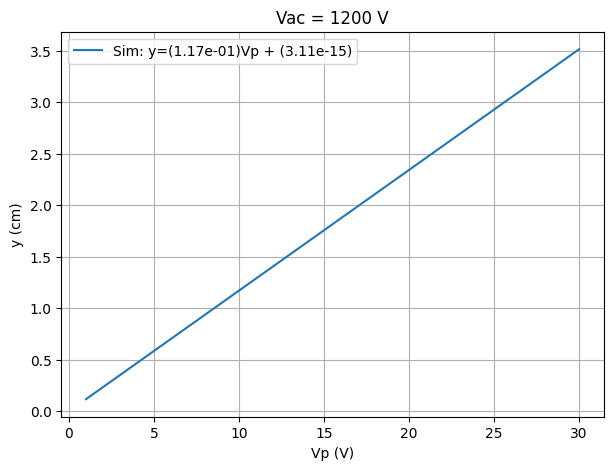
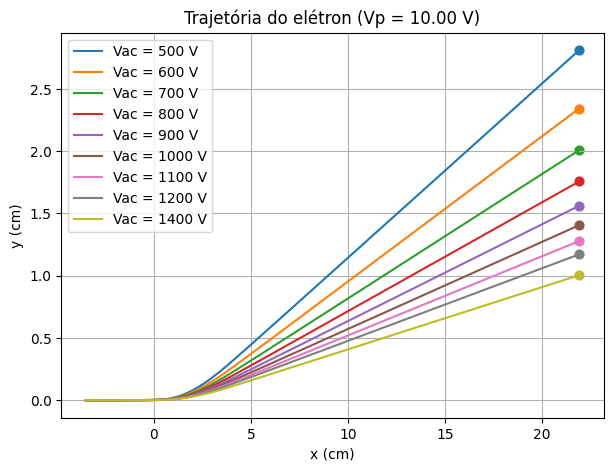
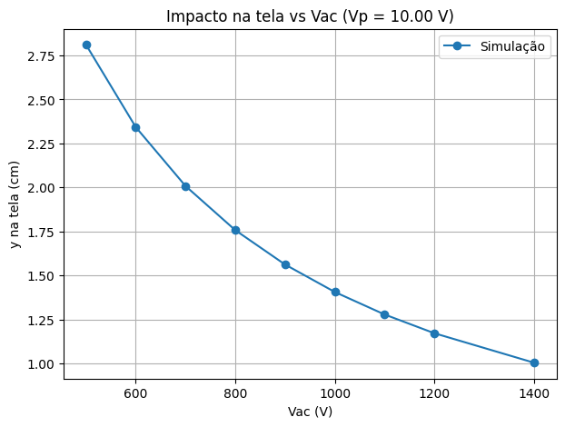

import numpy as np
import matplotlib.pyplot as plt
import scipy.interpolate as inter
import pandas as pd
import seaborn as snsSimular a trajetória do elétron sob campo elétrico obtido via FEMM e comparar com dados experimentais.
Definição das constantes físicas e parâmetros da simulação.
#@title Parâmetros físicos e geométricos
# ================= CONSTANTES =================
m = 9.11e-31 # massa do elétron (kg)
q = 1.6e-19 # carga (valor absoluto)
# ================= TENSÕES =================
Vacfixo = np.array([500,600,700,800,900,1000,1100,1200,1400])
Vp = np.arange(1.0, 30.5, 0.5)
# ================= GEOMETRIA =================
x_ini = -0.035
x_tela = 0.2187
dx = 0.0005
# ================= FEMM =================
Vpsim = 1.0Carregamento do campo elétrico exportado.
#@title Leitura do CSV do FEMM
# ================= LEITURA =================
df = pd.read_csv("electric_field_data.csv")
# ================= SELEÇÃO DO CORTE =================
y_ref = df.loc[df["y"] > 0, "y"].min()
df_slice = df[np.isclose(df["y"], y_ref)].copy()
df_slice = df_slice.sort_values("x")
# ================= CONVERSÕES =================
xsim = df_slice["x"].values / 1000.0
Esim = df_slice["Ey"].values
print("Corte em y =", y_ref)Corte em torno de y = 3.3
Valores únicos de y selecionados: [3.3333]
Explicação
O campo elétrico obtido via FEMM é uma função bidimensional:
Ey = Ey(x,y)
ou seja, sua intensidade depende tanto da posição ao longo do eixo (x) quanto da altura (y) entre as placas.
No entanto, neste modelo foi adotada a seguinte aproximação:
Ey(x,y) ≈ Ey(x,yref)
onde (yref) é um valor próximo de zero, correspondente à região central entre as placas.
Na prática, isso significa que:
.
Essa simplificação é válida sob as seguintes condições:
Nessas condições, o campo elétrico pode ser bem aproximado por seu valor ao longo do eixo central.
Essa abordagem reduz significativamente a complexidade do modelo, permitindo:
.
A principal limitação dessa aproximação é que ela ignora a dependência do campo elétrico com a altura (y).
Na prática, isso significa que:
.
O modelo adotado representa um compromisso entre simplicidade e fidelidade física.
A aproximação (Ey(x,y) ≈ Ey(x,0)) é suficiente para capturar o comportamento principal da deflexão do feixe, sendo adequada para análise inicial e fins didáticos.
A validade dessa aproximação pode ser avaliada comparando os resultados da simulação com os dados experimentais obtidos no tubo de raios catódicos.
Normalização do campo elétrico obtido no FEMM.
#@title Construção da função alfa(x)
# ================= INTERPOLAÇÃO =================
alfafunc = inter.interp1d(
xsim,
Esim / Vpsim,
kind="linear",
bounds_error=False,
fill_value=0.0
)
print("Campo máximo:", np.max(np.abs(Esim)), "V/m")Campo máximo: 454.5454 V/m
Verificação do perfil de campo ao longo do eixo x.
#@title Visualização do campo
# ================= EIXO PARA INTERPOLAÇÃO =================
# Cria 400 pontos igualmente espaçados no domínio de x (em metros)
# Usado para visualizar a função contínua α(x)
x_plot = np.linspace(min(xsim), max(xsim), 400)
# ================= CONVERSÃO DE UNIDADES =================
# Converter de metros para centímetros para exibição
xsim_cm = xsim * 100
x_plot_cm = x_plot * 100
# ================= PLOT =================
plt.figure(figsize=(10,4))
# -------- Campo (dados discretos do FEMM) --------
plt.subplot(1,2,1)
plt.plot(
xsim_cm, Esim,
marker='o',
linestyle='None',
markersize=4
)
plt.xlabel("x (cm)")
plt.ylabel("Ey (V/m)")
plt.title(f"Campo elétrico Ey (FEMM)\nN = {len(xsim)} pontos")
plt.grid()
# -------- Alfa (função contínua interpolada) --------
plt.subplot(1,2,2)
plt.plot(
x_plot_cm,
alfafunc(x_plot),
linestyle='-',
linewidth=2
)
plt.xlabel("x (cm)")
plt.ylabel("α(x) (1/m)")
plt.title("Função α(x) interpolada")
plt.grid()
# -------- Título geral --------
plt.suptitle("Perfil do campo elétrico ao longo do eixo x", fontsize=14)
plt.tight_layout()
plt.show()
Integração da equação de movimento sob o campo elétrico.
#@title Simulação da trajetória
x = np.arange(x_ini, x_tela + dx, dx)
yVp = np.zeros((len(Vacfixo), len(Vp)))
# ================= LOOP PRINCIPAL =================
for k, Vac in enumerate(Vacfixo):
dt = dx * np.sqrt(m / (2 * q * Vac))
for j, Vp_val in enumerate(Vp):
y = 0.0
vy = 0.0
for x_val in x:
E_val = float(alfafunc(x_val)) * Vp_val
ay = -q * E_val / m # elétron
y += vy*dt + 0.5*ay*dt**2
vy += ay*dt
# yVp[k, j] armazena diretamente a posição do elétron na tela
yVp[k, j] = y
print("Ordem de grandeza de y:", np.max(np.abs(yVp)))Ordem de grandeza de y: 0.08432810071489369
Visualização da simulação e dos dados experimentais.
#@title Gráfico y vs Vp com MMQ (simulação + experimental opcional)
# ================= IMPORTS =================
import numpy as np
import pandas as pd
import matplotlib.pyplot as plt
# ODR = Orthogonal Distance Regression (considera incertezas em x e y)
# Aqui usamos como um "MMQ generalizado"
from scipy import odr as mmq
# ================= CONFIGURAÇÕES =================
Vacfix = 1200
csv_exp = "dados_experimentais.csv"
tamanho_ponto = 40 # tamanho visual dos pontos
# ================= SIMULAÇÃO =================
idx = np.where(Vacfixo == Vacfix)[0][0]
y_vals = yVp[idx] * 100 # m → cm
# -------- MMQ SIMULAÇÃO --------
coef_sim = np.polyfit(Vp, y_vals, 1)
a_sim, b_sim = coef_sim
y_fit_sim = a_sim * Vp + b_sim
# métricas
res_sim = y_vals - y_fit_sim
ss_res_sim = np.sum(res_sim**2)
ss_tot_sim = np.sum((y_vals - np.mean(y_vals))**2)
r2_sim = 1 - ss_res_sim / ss_tot_sim
# ================= PLOT =================
plt.figure(figsize=(7,5))
plt.plot(
Vp, y_fit_sim, '-',
label=f"Sim: y=({a_sim:.2e})Vp + ({b_sim:.2e})"
)
# ================= DADOS EXPERIMENTAIS =================
print("\nTentando carregar dados experimentais...")
print("Formato esperado do CSV: Vp, y, dVp, dy")
dados_experimentais_carregados = False
try:
# -------- LEITURA DO CSV --------
df_exp = pd.read_csv(csv_exp)
# -------- VALIDAÇÃO --------
colunas = ["Vp", "y", "dVp", "dy"]
for c in colunas:
if c not in df_exp.columns:
raise ValueError(f"Coluna '{c}' não encontrada")
# -------- EXTRAÇÃO --------
Vp_exp = df_exp["Vp"].values
y_exp = df_exp["y"].values
dVp = df_exp["dVp"].values
dy = df_exp["dy"].values
print("✔ Dados experimentais carregados com sucesso.")
# -------- PLOT EXPERIMENTAL --------
plt.errorbar(
Vp_exp, y_exp,
xerr=dVp, yerr=dy,
fmt='o',
markersize=tamanho_ponto/5,
capsize=3,
label='Experimental'
)
# ================= MMQ (ODR) =================
def modelo(B, x):
return B[0]*x + B[1]
modelo_mmq = mmq.Model(modelo)
dados_mmq = mmq.RealData(
Vp_exp,
y_exp,
sx=dVp,
sy=dy
)
# chute inicial melhorado
ajuste = mmq.ODR(dados_mmq, modelo_mmq, beta0=[a_sim, b_sim])
resultado = ajuste.run()
a_exp, b_exp = resultado.beta
erro_a_exp, erro_b_exp = resultado.sd_beta
# linha ajustada
Vp_lin = np.linspace(min(Vp_exp), max(Vp_exp), 200)
y_fit_exp = a_exp*Vp_lin + b_exp
plt.plot(
Vp_lin, y_fit_exp, '--',
label=f"Exp: y=({a_exp:.2e})Vp + ({b_exp:.2e})"
)
# métricas (aproximação em y)
y_fit_exp_data = a_exp*Vp_exp + b_exp
res_exp = y_exp - y_fit_exp_data
ss_res_exp = np.sum(res_exp**2)
ss_tot_exp = np.sum((y_exp - np.mean(y_exp))**2)
r2_exp = 1 - ss_res_exp / ss_tot_exp # estimativa
dados_experimentais_carregados = True
except FileNotFoundError:
print("\n⚠️ CSV de dados experimentais não encontrado.")
print("→ Apenas a simulação será exibida.")
except pd.errors.EmptyDataError:
print("\n⚠️ O arquivo CSV está vazio.")
print("→ Apenas a simulação será exibida.")
except ValueError as e:
print("\n⚠️ Problema nas colunas do CSV:")
print("→", e)
print("→ Esperado: Vp, y, dVp, dy")
except Exception as e:
print("\n⚠️ Erro ao processar os dados experimentais:")
print("→", e)
# ================= FORMATAÇÃO =================
plt.title(f'Vac = {Vacfix} V')
plt.xlabel('Vp (V)')
plt.ylabel('y (cm)')
plt.grid()
plt.legend()
plt.show()
# ================= RESULTADOS =================
# -------- SIMULAÇÃO --------
print("\n=== MMQ (Simulação) ===")
print("Modelo: y = a·Vp + b\n")
print(f"a = {a_sim:.4e} cm/V")
print(f"b = {b_sim:.4e} cm")
print(f"R² = {r2_sim:.6f}")
# -------- EXPERIMENTAL --------
if dados_experimentais_carregados:
print("\n=== MMQ (Experimental) ===")
print("Modelo: y = a·Vp + b\n")
print(f"a = ({a_exp:.4e} ± {erro_a_exp:.2e}) cm/V")
print(f"b = ({b_exp:.4e} ± {erro_b_exp:.2e}) cm")
print("\nQualidade do ajuste:")
print(f"R² = {r2_exp:.6f}")
print(f"Resíduo quadrático = {ss_res_exp:.4e}")
else:
print("\n(Dados experimentais não utilizados nesta execução)")
Tentando carregar dados experimentais...
Formato esperado do CSV: Vp, y, dVp, dy
⚠️ CSV de dados experimentais não encontrado.
→ Apenas a simulação será exibida.

=== MMQ (Simulação) ===
Modelo: y = a·Vp + b
a = 1.1712e-01 cm/V
b = 3.1118e-15 cm
R² = 1.000000
(Dados experimentais não utilizados nesta execução)
Visualização (x,y) do elétron e marcações na tela dos dados experimentais.
#@title Trajetória do elétron + impacto na tela
# ================= CONFIGURAÇÕES =================
Vptraj = 10.0
csv_exp = "dados_tela.csv" # opcional
# Arquivo CSV opcional com dados experimentais
# Formato esperado (com cabeçalho):
#
# Vac → tensão de aceleração (V)
# y → posição do feixe na tela (cm)
# dVac → incerteza em Vac (V)
# dy → incerteza em y (cm)
#
# Exemplo:
# Vac,y,dVac,dy
# 600,2.8,5,0.1
# 800,2.0,5,0.1
#
# Observação:
# - As colunas devem ter exatamente esses nomes
# - As unidades devem ser mantidas conforme indicado
# ================= ÍNDICE DO Vp =================
idx_vp = np.argmin(np.abs(Vp - Vptraj))
# ================= CONVERSÃO DE UNIDADES =================
x_cm = x * 100 # m → cm
# ================= VAC UTILIZADOS =================
Vac_usados = Vacfixo.copy()
# tentar usar Vac dos alunos
try:
df_exp = pd.read_csv(csv_exp)
if "Vac" in df_exp.columns:
Vac_usados = df_exp["Vac"].values
print("✔ Usando valores de Vac dos dados experimentais.")
except:
print("⚠️ Usando valores padrão de Vac da simulação.")
# ================= PLOT =================
plt.figure(figsize=(7,5))
y_tela_lista = []
for Vac_val in Vac_usados:
# índice mais próximo no array da simulação
idx_vac = np.argmin(np.abs(Vacfixo - Vac_val))
# recalcular trajetória (ou usar já calculada se tiver y completo)
vy = 0.0
y_pos = 0.0
y_traj = []
for xi in x:
if xi < np.max(xsim):
E = alfafunc(xi) * Vptraj
else:
E = 0.0
dt = dx * np.sqrt(m / (2 * q * Vac_val))
ay = -q * E / m
y_pos = y_pos + vy*dt + 0.5*ay*dt**2
vy = vy + ay*dt
y_traj.append(y_pos)
y_traj = np.array(y_traj) * 100 # m → cm
# salvar ponto final
y_tela = y_traj[-1]
y_tela_lista.append(y_tela)
# plot trajetória
plt.plot(x_cm, y_traj, label=f"Vac = {Vac_val:.0f} V")
# ponto na tela
plt.scatter(x_cm[-1], y_tela, s=40)
# ================= FORMATAÇÃO =================
plt.title(f"Trajetória do elétron (Vp = {Vptraj:.2f} V)")
plt.xlabel("x (cm)")
plt.ylabel("y (cm)")
plt.grid()
plt.legend()
plt.show()
# ================= VALORES NA TELA =================
print("\n=== Posição na tela (simulação) ===")
for Vac_val, y_val in zip(Vac_usados, y_tela_lista):
print(f"Vac = {Vac_val:.0f} V → y = {y_val:.3f} cm")⚠️ Usando valores padrão de Vac da simulação.

=== Posição na tela (simulação) ===
Vac = 500 V → y = 2.811 cm
Vac = 600 V → y = 2.342 cm
Vac = 700 V → y = 2.008 cm
Vac = 800 V → y = 1.757 cm
Vac = 900 V → y = 1.562 cm
Vac = 1000 V → y = 1.405 cm
Vac = 1100 V → y = 1.278 cm
Vac = 1200 V → y = 1.171 cm
Vac = 1400 V → y = 1.004 cm
# @title TESTE, em desenvolvimento
# ==========================================================
# BLOCO: Impacto na tela — Simulação vs Experimento
# ----------------------------------------------------------
# Autor: [Seu Nome]
# Data: [DD/MM/AAAA]
# Versão: 0.1
#
# Objetivo:
# Comparar a posição de impacto na tela obtida por simulação
# com dados experimentais, incluindo incertezas.
#
# Entradas:
# - Vptraj: tensão de placa selecionada (Vp)
# - Vacfixo: vetor de tensões de aceleração
# - yVp: matriz de trajetórias simuladas
# - csv_exp: arquivo com dados experimentais
#
# Saídas:
# - Gráfico comparativo (simulação vs experimento)
# - Intervalo de valores simulados na tela
#
# Observações:
# - Executar após a simulação completa da trajetória
# - Se não houver dados experimentais, plota apenas simulação
# ==========================================================
# ================= CONFIGURAÇÕES =================
Vptraj = 10.0 # valor de Vp usado pelo aluno
csv_exp = "dados_tela.csv" # arquivo experimental (opcional)
tamanho_ponto = 50
# ================= ÍNDICE DO Vp =================
idx_vp = np.argmin(np.abs(Vp - Vptraj))
# ================= EXTRAÇÃO DO PONTO NA TELA =================
# último ponto da trajetória em x
y_tela_sim = yVp[:, idx_vp] * 100 # converter m → cm
# ================= PLOT =================
plt.figure(figsize=(7,5))
# -------- SIMULAÇÃO --------
plt.plot(
Vacfixo,
y_tela_sim,
'-o',
label='Simulação'
)
# ================= DADOS EXPERIMENTAIS =================
print("\nTentando carregar dados experimentais (formato esperado: Vac, y, dVac, dy)...")
try:
df_exp = pd.read_csv(csv_exp)
# -------- VALIDAÇÃO --------
colunas = ["Vac", "y", "dVac", "dy"]
for c in colunas:
if c not in df_exp.columns:
raise ValueError(f"Coluna '{c}' não encontrada")
# -------- EXTRAÇÃO --------
Vac_exp = df_exp["Vac"].values
y_exp = df_exp["y"].values
dVac = df_exp["dVac"].values
dy = df_exp["dy"].values
print("✔ Dados experimentais carregados.")
# -------- PLOT EXPERIMENTAL --------
plt.errorbar(
Vac_exp, y_exp,
xerr=dVac, yerr=dy,
fmt='o',
markersize=tamanho_ponto/5,
capsize=3,
label='Experimental'
)
except Exception as e:
print("\n⚠️ Dados experimentais não disponíveis.")
print("→ Apenas a simulação será exibida.")
print("→ Detalhe:", e)
# ================= FORMATAÇÃO =================
plt.title(f"Impacto na tela vs Vac (Vp = {Vptraj:.2f} V)")
plt.xlabel("Vac (V)")
plt.ylabel("y na tela (cm)")
plt.grid()
plt.legend()
plt.show()
# ================= INFORMAÇÃO ADICIONAL =================
print("\nIntervalo da simulação:")
print(f"y mínimo = {np.min(y_tela_sim):.3f} cm")
print(f"y máximo = {np.max(y_tela_sim):.3f} cm")
Tentando carregar dados experimentais (formato esperado: Vac, y, dVac, dy)...
⚠️ Dados experimentais não disponíveis.
→ Apenas a simulação será exibida.
→ Detalhe: [Errno 2] No such file or directory: 'dados_tela.csv'

Intervalo da simulação:
y mínimo = 1.004 cm
y máximo = 2.811 cm